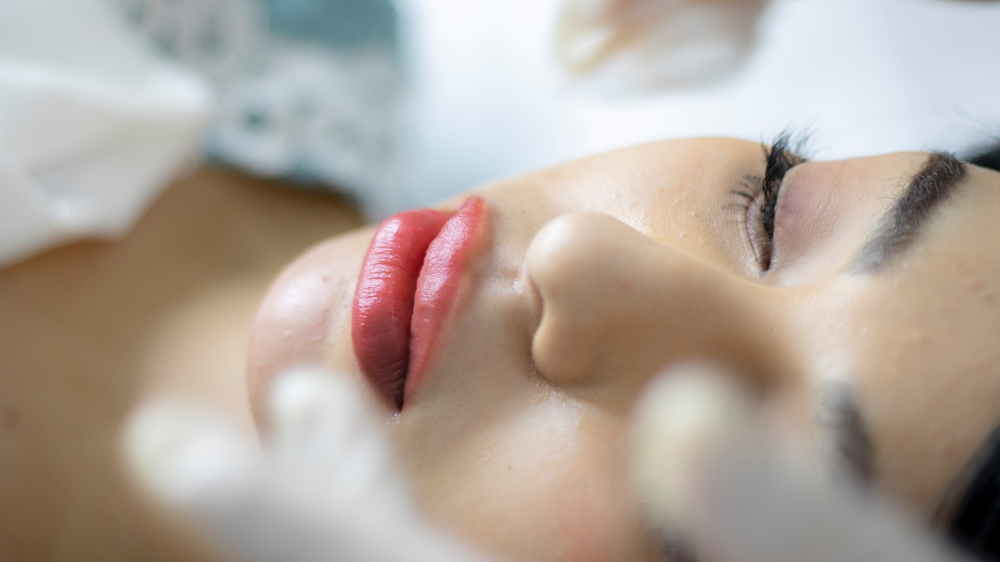

Serviços
Lash Lifting
Essa técnica, conhecida como a evolução do antigo permanente de cílios, vai atuar diretamente na estrutura do fio, e com o novo formato projetado, os fios ficam curvados, alinhas e com coloração pretinhos, dando a sensação de cílios maiores: efeito rímel! Tem duração média de 45 dias, variando conforme o ciclo de crescimento dos cílios. Cada cliente apresenta um resultado final diferente, variando conforme a quantidade e tamanho dos cílios.

Limpeza de pele
É o procedimento básico para quem quer cuidar da pele! Indicada, principalmente, para remoção de cravos abertos (pontos pretos) e remoção de miliuns, ajuda, além de amenizar a aparência dos poros abertos e controlar a oleosidade. Indicada para todos os tipos de pele, a limpeza de pele devolve o equilíbrio para peles secas, normais, oleosas e mistas.

Dermaplaning
Considerado um peeling físico, feito com uma lâmina de bisturi de alta precisão. Esse procedimento retira suavemente o extrato córneo, células mortas, sujidades da pele, maquiagem incrustada e lanugem da face. Auxilia no processo de rejuvenescimento facial e promove resultado imediato de luminosidade e viço da pele. Pode ser a porta de entrada para demais tratamentos estéticos (como microagulhamento) pois permite maior permeabilidade de ativos e tem poucas contra-indicações.
Microagulhamento
Técnica que estimula o organismo a produzir fibroblastos (células responsáveis pela produção de colágeno), através de um equipamento chamado Smart Dermapen, que causa micro lesões controladas na região tratada, de forma eficaz e segura! Ainda com o auxilio de ativos específicos, o microagulhamento pode ser usado para tratamentos de: anti-idade (efeito tensor, pálpebras e efeito lift), hiperpigmentações (olheiras, melasma, clareamento da pele), efeito rejuvenescedor (controle oleosidade, retração dos poros), tratamento de estrias, acne e tratamentos capilares! O número de sessões e tempo de tratamento varia conforme o tipo de tratamento.
Secagem de vasinhos
Esse tratamento é indicado para a eliminação dos vasinhos nas pernas, que incomodam visualmente, gerando uma aparência mais homogênea e bonita às pernas. Através de uma aplicação minimamente invasiva, de um produto esclerosante (glicose) temos a destruição do vasinho e o seu desaparecimento. A sessão de secagem de vasinhos dura em médica 50 minutos e o número de sessões varia caso a caso